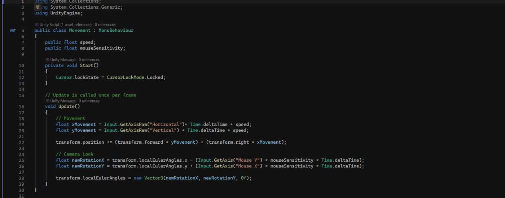
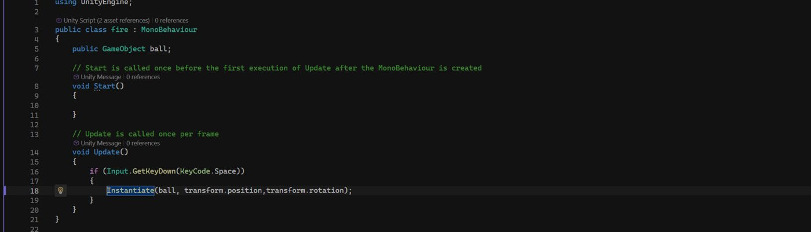
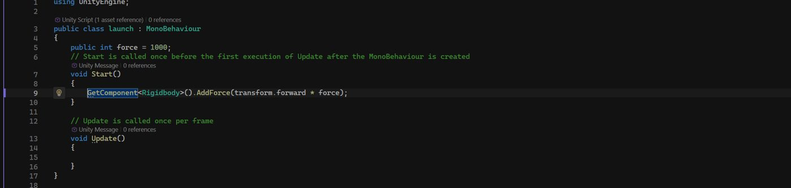
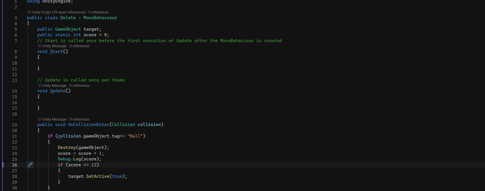
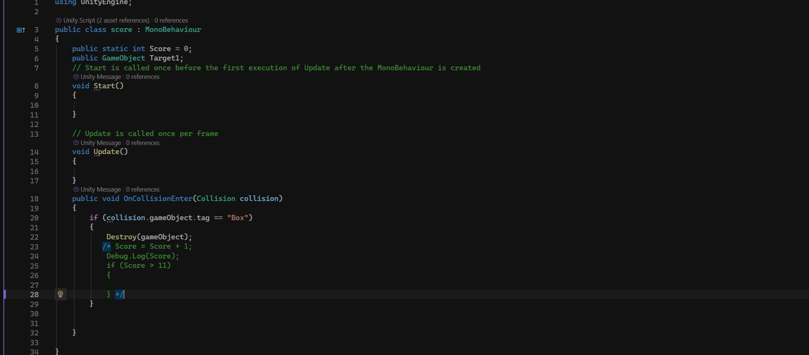
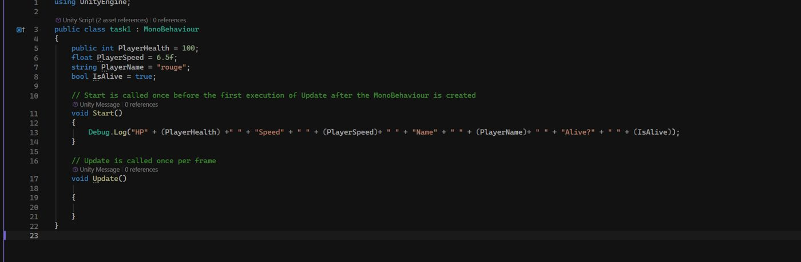

Unity games
Ball Launcher
My first Unity project and my first C# — a launcher that fires balls at a wall of boxes, scored by what gets knocked down.
Gameplay
How it works
This was my first time using code other than Python. Movement uses WASD with the camera as the direction, so you aim by looking. Pressing space fires a ball from the launcher, and a Launch script on the ball itself adds the initial force in whatever direction I was facing when I fired.
A Delete script removes each ball after its first collision to save memory, and a Score script destroys the boxes when they're hit and tracks the score in the debug log. There's also a task1 script — just me practising how Debug.Log works.
Featured code
launch.cs — give the ball its push
public class launch : MonoBehaviour
{
public int force = 1000;
void Start()
{
GetComponent<Rigidbody>().AddForce(transform.forward * force);
}
}The whole mechanic in one line: the moment a ball is spawned it gets a force along its own forward direction, which is wherever the launcher was pointing.
All the scripts
6 scripts, each with what it does in my words.






Confidence, before and after
This was my first Unity project and first time using code other than Python, so I can't give an accurate starting confidence. By the end I'd say 5/10 — I could remake it, but it would be challenging.